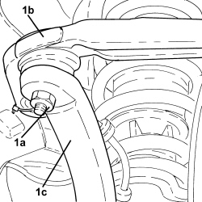
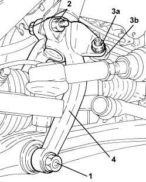

4410A80 LOWER FORK CONNECTING FRONT SUSPENSION SHOCK ABSORBER TO LOWER TRACK CONTROL ARM (ONE), LEFT OR RIGHT - R.R. CHECK WHEEL GEOMETRY SEPARATELY
- Path
- Procedures > 44 SUSPENSION AND WHEELS > 4410 FRONT SUSPENSION > 4410A FRONT DAMPERS AND SPRINGS > 4410A80 LOWER FORK CONNECTING FRONT SUSPENSION SHOCK ABSORBER TO LOWER TRACK CONTROL ARM (ONE), LEFT OR RIGHT - R.R. CHECK WHEEL GEOMETRY SEPARATELY
- Kind
- repair procedure (removal / refitting; the operation number is the code)
- Applies to
- all engines; all production periods
- Interactive page
- https://sloeber94.github.io/elrnDB-aBrrSpdr/en/#/946002196
Applies to: all engines; all production periods
 Removing
Removing
 Refitting
Refitting- Position the vehicle on a lift.

Applies to: all engines; all production periods

Applies to: all engines; all production periods
1. Undo the bolt securing the lower fork connecting the front suspension damper to the lower wishbone, lower wishbone side.
2. Unscrew the bolt securing the lower fork connecting the front suspension shock absorber to the lower track control arm, shock absorber side.
3. Undo the nut (3a) and disconnect the front suspension anti-roll bar joint (3b) from the lower fork.
4. Remove the lower fork connecting the front suspension shock absorber to lower track control arm

Applies to: all engines; all production periods
Refitting
Removing1. Place the lower fork connecting the front suspension shock absorber to lower track control arm back in its housing.
2. Connect the front anti-roll bar joint (2b) to the lower fork and tighten the nut (2b) to the recommended torque.
3. Tighten the bolt securing the lower fork connecting the front suspension shock absorber to the lower track control arm, shock absorber side, to the recommended torque.
4. Tighten the bolt securing the lower fork connecting the front suspension shock absorber to the lower track control arm, lower track control arm side, to the recommended torque.

Applies to: all engines; all production periods
- Tighten the bolt fixing the wiring/pipes mounting bracket to the lower fork.